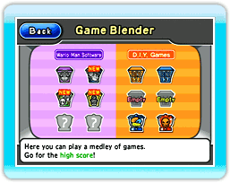

Vous pouvez jouer à des jeux dans la section Games du Wario-Man Super Store (grand magasin Wario-Man).

● Menu de la section Games
Pointez le curseur sur l’une des trois options du menu et appuyez sur  .
.
·Wario-Man Software (logiciels Wario-Man)
Seuls les jeux préinstallés de WarioWare: D.I.Y. Showcase auxquels vous avez déjà joué aléatoirement dans le mode Game Blender (mélangeur à jeux) sont disponibles dans cette section. Choisissez le jeu auquel vous voulez jouer, puis appuyez sur  (jouer).
(jouer).
·D.I.Y. Games
(jeux D.I.Y.)
Dans cette section, vous trouverez les jeux que vous avez reçus dans le Distribution Center (centre de distribution). Vous pouvez y jouer de la même façon que les jeux de la section Wario-Man Software. Notez bien que vous pouvez placer le curseur sur les jeux et appuyer sur et  en même temps pour les prendre et les placer sur une autre étagère, ou dans une autre case de la même étagère. Vous pouvez stocker jusqu’à 72 jeux dans la section D.I.Y. Games. Pour en supprimer un, sélectionnez-le et appuyez sur
en même temps pour les prendre et les placer sur une autre étagère, ou dans une autre case de la même étagère. Vous pouvez stocker jusqu’à 72 jeux dans la section D.I.Y. Games. Pour en supprimer un, sélectionnez-le et appuyez sur  (supprimer).
(supprimer).
Note : Vous ne pouvez pas récupérer les jeux que vous avez supprimés.
·Game Blender (mélangeur à jeux)
Dans cette section, vous pouvez jouer à tous les jeux : les jeux préinstallés dans WarioWare: D.I.Y. Showcase et les jeux reçus via le Distribution Center. Pour jouer aux jeux préinstallés seulement, rendez-vous dans la section Wario-Man Software. Pour jouer aux jeux reçus via le Distribution Center seulement, rendez-vous dans la section D.I.Y. Games.
Sélectionnez l’icône d’un niveau et appuyez sur (jouer).
Note : Les jeux préinstallés auxquels vous jouez pour la première fois dans cette section seront déverrouillés et apparaîtront dans la section Wario-Man Software. Vous pourrez alors y jouer en tout temps.
De plus, la section Game Blender vous offre plusieurs autres modes de jeu, décrits ci-dessous. Vous pouvez déverrouiller ces modes de jeu en remplissant certaines sections de Wario-Man Software ou en obtenant un haut pointage dans certains jeux, etc.
Wario-Man
Shuffle |
Les jeux de la section Wario-Man Software ont été mélangés!
|
Wario-Man
Ultra Hard! |
Les jeux de la section Wario-Man Software ont été accélérés!
|
D.I.Y. Mix:
Shuffle |
Les jeux de la section D.I.Y. Games ont été mélangés!
|
D.I.Y. Mix:
Ultra Hard! |
Les jeux de la section D.I.Y. Games ont été accélérés!
|
Mix All:
Shuffle |
Les jeux de toutes les sections ont été mélangés!
|
Mix All:
Ultra Hard! |
Les jeux de toutes les sections ont été accélérés!
|
Mix All:
Versus |
Jusqu’à quatre joueurs peuvent jouer l’un contre l’autre (des manettes Wii Remote additionnelles vendues séparément sont requises). Chaque joueur doit choisir une position à l’écran, et lorsque votre position s’illumine, vous devez réussir le jeu qui vous est présenté.
(Attention : Les autres joueurs peuvent aussi contrôler votre jeu!)
Vous perdez la partie si vous échouez quatre fois. Le dernier joueur toujours en vie gagne.
|
● Comment jouer aux jeux
Tout d’abord, le nombre de chances restantes et le numéro du jeu s’affichent à l’écran, puis le jeu commence. Pointez le curseur au bon endroit et appuyez sur dans le temps donné. Si vous commettez une erreur ou si vous manquez de temps, vous perdez une chance. Vous perdez la partie lorsque vous avez épuisé toutes vos chances. Le temps restant au jeu est indiqué par la mèche de la bombe affichée au bas de l’écran.
Note : Le nombre de chances restantes, le numéro du jeu et l’écran de jeu peuvent différer selon la section ou le type de jeu.
·Boss Level (niveau boss)
Une fois que vous avez réussi un certain nombre de jeux, un niveau boss apparaît. Si vous réussissez ce niveau boss, vous obtenez une chance de plus.